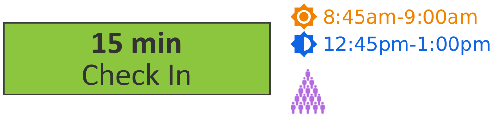
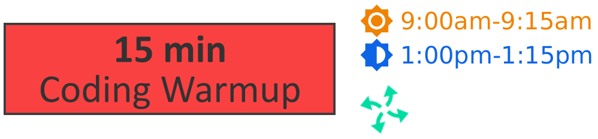
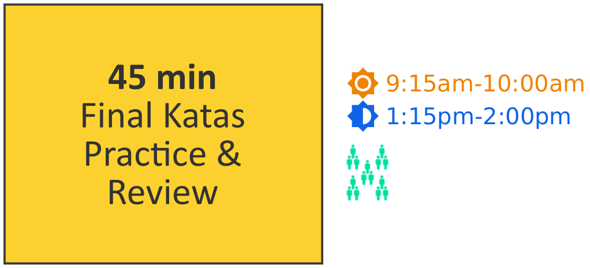
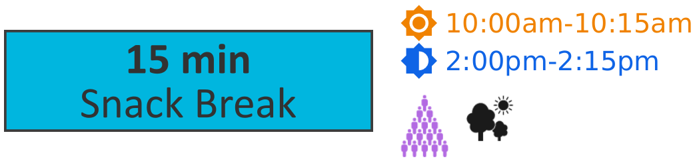
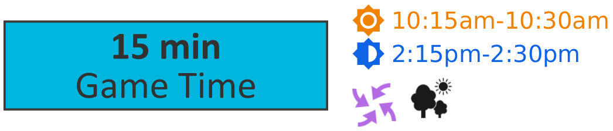
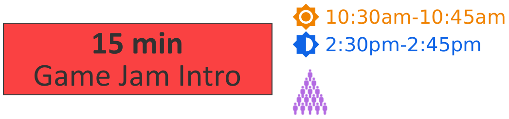
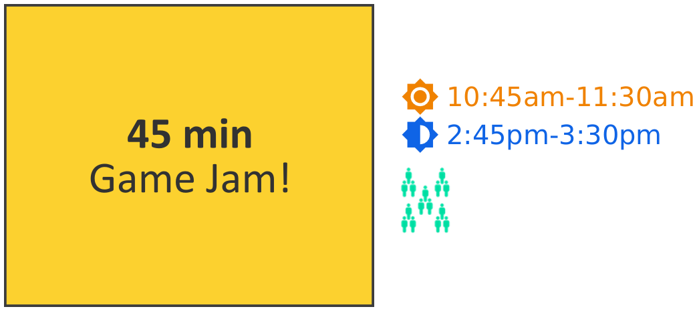
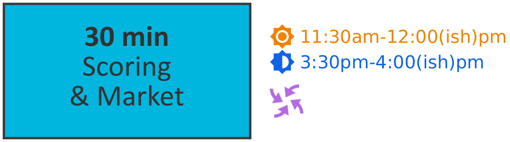
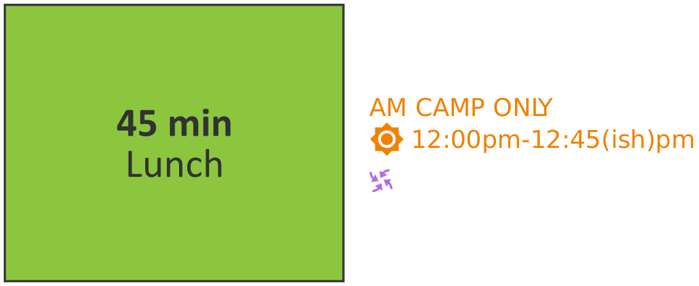

5 Friday Head Coach Script
|
| SCRIPT KEY |
| |||
|
|
| = AM camp |
| AM camp only notes | |
|
| = PM camp |
| PM camp only notes | ||
|
|
| = move outside for this block (if possible) | |||
|
| = entire camp is together/mixed for this block | ||||
|
| = breakout into individual camp teams for this block | ||||
|
| Really important notes! | ||||
|
| New notes for this day only/this day forward | ||||


5.1 Check In

Touch base with TLs about Game Jam: answer any questions, confirm duties, etc. early in the day.
Arrive at the check in location at quarter of (8:45am/12:45pm).
Assign specific jobs to all TLs
Head to camp room on the hour (9am/1pm)
- Assign One TL to wait for any late students
TL keeps tablet
TL returns to camp room when all students arrive or at quarter past (9:15am/1:15pm)
Once TL returns, confirm attendance on backend is accurate with HQ over Slack
5.2 Coding Warmup

With loose guidance from TLs, students review katas.
Step in for TL who is waiting at check-in
5.3 Final Katas – Practice and Review

Team Leaders introduce the last katas and/or review as they see fit – this is the last learning/practice before the jam.
Monitor and assist TLs.
PM ONLY – take YOUR 30 min lunch break from 1:20-1:50
5.4 Snack Break

Dismiss TLs for break – TLs should LEAVE the camp space.
All students are off computers for the entire break
Monitor all students and keep it safe and sane
5.5 Game Time

Note the shorter game time today. Feel free to adjust and pick a favorite game from earlier in the week to play again for less explaining time/more playing time.
Age Group |
| Game |
| Notes |
All Ages |
|
| Tag needs large outdoor play space. | |
Younger |
|
| 10 player min. | |
Older |
|
| 8 player min. |
5.6 Game Jam Intro

- Announce to all students Game Jam Info:
45 min jam
How to earn points
Your game MUST RUN
Coach/TLs now Judges
Resources if you get stuck (and prices!)
Optional partners, rules for partners
Important advice: Start SMALL and TEST often
Give time for a few questions.
- Before starting the jam, ensure that all students:
Have a partner (if they choose)
Have an index card w/ their name(s)
Are PUMPED!!!
- Before starting the jam, ensure that all Team Leaders:
Have stickers
Have challenge cards ready
Know resource prices
Agree on a "bonus point" range so that bonus points stay fair across all camp teams (example, agree on a range of 2 - 6 bonus points per student or pair.)
Are PUMPED!!!
5.7 Game Jam

 15, 10, 5 and 2 min warnings
15, 10, 5 and 2 min warnings
Keep energy and positivity up!!
Monitor camp groups, assisting TLs as needed.
Ensure all students get a working game by the end of jam.
5.8 Scoring & Market

- Lead all 3rd-10th camps in scoring their games:
Walk students through formula
TLs assist in checking scores
TLs award final $$$ & badge
For K-2nd camps, TLs lead scoring as you lead 3rd-10th.
As awarding is finishing up, open the market.
Assign yourself or a TL to be Market Cashier
Students tidy their camp table before allowed to go to market(check EOW Checklist below for PM todo list)
Welcome camp teams one at a time to visit market
Students done with market collect their things for lunch/home and line up by door
PM only – ensure you finish with enough time to travel to check-out location by 4pm
5.9 Lunch – AM only

 10, 5 and 2 min warnings
10, 5 and 2 min warnings
Ensure you finish with enough time to travel to check-out location by 12:45pm
Keep lunch time safe and organized
5.10 Check Out

Students take home lanyards, extra dollars, prizes.
Arrive at the check-out location on time
Assign specific jobs to all TLs
Alert HQ of any students awaiting pickup at ten past (1:10pm/4:10pm) and keep HQ up to date when picked up
PM ONLY – review and complete EOW (end of week) checklist, below, with assitance from TLs before dismissing TLs ASAP and clock out. Have a great weekend!
5.11 EOW Checklist – PM only
Staff to complete (with assistance from students as appropriate) during Market/Wrap Up. TL(s) continue as needed during checkout. Complete before dismissing TLs and clocking out. Disregard this list if final week, please refer to pack-up instructions.
Power down all chromebooks.
- In most locations, please leave the following set up:
Extension cords, power strips & power cords
Market setup (DO organize and tidy)
Tables & Chairs
Schedule poster
- In all locations, please neatly store the following in the correctly labeled bins:
Market items
Lanyards, badge holders and kata cards
Teaching kit materials
Head Coach bag materials
Extra markers, scrap paper, etc.
Mice
Chromebooks (unless location has charging locker, where chromebooks should stay)
Tidy the room (leave it how you would like to find it!).
Inform HQ of any equipment issues/needs.